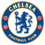

Sejarah chelsea
Manchester United Football Club adalah sebuah klub sepak bola profesional yang berbasis di Old Trafford, Manchester Raya, Inggris, dan bermain di Liga Utama Inggris. Klub ini memiliki 20 gelar Liga Inggris dengan 13 di antaranya di era Liga Utama, terbanyak sepanjang masa. Didirikan sebagai Newton Heath LYR Football Club pada tahun 1878, klub ini berganti nama menjadi Manchester United pada 1902 dan pindah ke Old Trafford pada tahun 1910.
Manchester United Football Club adalah sebuah klub sepak bola profesional yang berbasis di Old Trafford, Manchester Raya, Inggris, dan bermain di Liga Utama Inggris. Klub ini memiliki 20 gelar Liga Inggris dengan 13 di antaranya di era Liga Utama, terbanyak sepanjang masa. Didirikan sebagai Newton Heath LYR Football Club pada tahun 1878, klub ini berganti nama menjadi Manchester United pada 1902 dan pindah ke Old Trafford pada tahun 1910.
Manchester United telah memenangkan banyak trofi di sepak bola Inggris, termasuk 20 gelar Liga—terbanyak dalam sejarah, 13 gelar Piala FA, 6 gelar Piala Liga dan 21 gelar Community Shield FA—juga terbanyak dalam sejarah. Klub ini juga telah memenangkan tiga gelar Piala/Liga Champions, satu Liga Eropa UEFA, satu Piala Winners UEFA, satu Piala Super UEFA, satu Piala Interkontinental, dan satu Piala Dunia Antarklub FIFA—klub Inggris pertama yang menjuarai ajang ini. Pada musim 1998–1999, klub ini memenangkan treble (trigelar) dari Liga Utama, Piala FA, dan Liga Champions; prestasi ini belum pernah terjadi sebelumnya untuk klub Inggris. Manchester United juga merupakan salah satu klub tersukses sepanjang masa di Inggris.
Bencana Udara München 1958 merenggut nyawa delapan pemain. Pada tahun 1968, di bawah manajemen Matt Busby, Manchester United adalah klub sepak bola Inggris pertama yang memenangkan Piala Eropa. Sedangkan Alex Ferguson memenangkan total 38 gelar utama, dari bulan November 1986 sampai Mei 2013,[4][5] ketika ia mengumumkan pensiun setelah 26 tahun di klub.[6] Rekan senegaranya David Moyes diangkat sebagai penggantinya pada tanggal 9 Mei 2013 tetapi ia dinilai gagal dan tak lama kemudian dipecat.
Manchester United adalah klub sepak bola terkaya ketiga di dunia untuk 2011–12 dalam hal pendapatan, dengan pendapatan tahunan sebesar €395.9 juta, dan kedua klub paling berharga tahun 2013, senilai $3.165 miliar. Pada bulan Januari 2015 lalu, Manchester United dinobatkan sebagai klub terkaya kedua di dunia,[8] Ini adalah salah satu tim sepak bola yang paling banyak didukung di dunia.[9][10][11] Setelah sahamnya tercatat di London Stock Exchange pada tahun 1991, klub itu dibeli oleh Malcolm Glazer pada Mei 2005 di kesepakatan menilai klub di hampir £800 juta.[12] Pada bulan Agustus 2012, Manchester United melakukan penawaran umum perdana di Bursa Efek New York.
Pada Januari 1902, dengan utang £ 2.670 - setara dengan £ 250.000 per 2014 - klub itu disajikan dengan urutan berliku, Sebelum tim mereka bubar, mereka menerima investasi dari J. H. Davies[ket 1], direktur Manchester Breweries.[15] Awalnya, seorang legenda tim, Harry Stafford, yang merupakan kapten tim, memamerkan anjing St. Bernard nya[ket 2], kemudian Davies memutuskan untuk membeli anjing itu. Stafford menolak, tetapi berhasil memengaruhi Davies untuk menanamkan modal pada tim dan menjadi chairman tim.[16] Diadakan rapat untuk mengganti nama perkumpulan. Manchester Central dan Manchester Celtic adalah nama yang diusulkan, sebelum Louis Rocca, seorang imigran muda asal Italia, berkata "Tuan-tuan, mengapa kita tidak menggunakan nama Manchester United?"[17] Nama ditetapkan dan Manchester United secara resmi eksis mulai 26 April 1902. Davies juga memutuskan untuk mengganti warna tim dan terpilihlah warna merah dan putih sebagai warna tim Manchester United.

Trofi Yang Di Capai chelsea
🌍 Kompetisi Internasional & Eropa (11 Trofi)Piala Dunia Antarklub FIFA: 2 gelar (2021, 2025)Liga Champions UEFA: 2 gelar (2011/12, 2020/21)Liga Europa UEFA: 2 gelar (2012/13, 2018/19)Piala Winners UEFA: 2 gelar (1970/71, 1997/98)Piala Super UEFA: 2 gelar (1998, 2021)Liga Konferensi UEFA: 1 gelar (2024/25)🏴 Kompetisi Domestik Inggris (23 Trofi)Liga Utama Inggris (First Division / Premier League): 6 gelar (1954/55, 2004/05, 2005/06, 2009/10, 2014/15, 2016/17)Piala FA (FA Cup): 8 gelar (1970, 1997, 2000, 2007, 2009, 2010, 2012, 2018)Piala Liga Inggris (EFL Cup / Carabao Cup): 5 gelar (1965, 1998, 2005, 2007, 2015)Community Shield (Charity Shield): 4 gelar (1955, 2000, 2005, 2009)Full Members' Cup: 2 gelar (1986, 1990)
Musim 1998–99 untuk Manchester United adalah musim tersukses karena mereka berhasil menjadi satu-satunya tim Inggris yang pernah meraih Treble (tiga gelar dalam satu musim)—dengan memenangkan Liga Premier Inggris, Piala FA dan Liga Champion UEFA di musim yang sama.[22] Setelah melewati Liga Utama yang padat, Manchester United berhasil memenangkan liga pada pertandingan terakhir melawan Tottenham Hotspur dengan skor 2–1, ketika Arsenal menang 1–0 atas Aston Villa.[23] Memenangkan Liga Utama merupakan bagian pertama dari treble United, yang disebut Ferguson bagian tersulit.[23] Di final Piala FA mereka bertemu Newcastle United dan menang 2–0 melalui gol Teddy Sheringham dan Paul Scholes.[24] Pada pertandingan terakhir mereka musim itu, pertandingan final Liga Champions UEFA 1999, mereka mengalahkan Bayern Munich, pertandingan tersebut disebut-sebut sebagai comeback terbaik yang pernah ada, kalah sampai dengan injury time dan mencetak gol dua kali di menit-menit terakhir untuk memastikan kemenangan 2–1.[22] Manchester United juga memenangkan Piala Interkontinental setelah mengalahkan Palmeiras 1–0 di Tokyo.
United memenangkan liga tahun 2000 dan 2001, tetapi mereka gagal meraih kembali trofi kompetisi Eropa. Pada tahun 2000, Manchester United menjadi salah satu dari 14 pendiri kelompok G-14.[26] Ferguson mengadopsi gaya permainan bertahan dan tetap gagal di kompetisi Eropa dan United menyelesaikan liga pada urutan ketiga klasemen. Mereka meraih kembali gelar liga musim berikutnya dan memulai musim dengan sangat baik, tetapi penampilan mereka memburuk ketika Rio Ferdinand menerima skorsing 8 bulan karena gagal dalam tes doping. Mereka memenangkan Piala FA 2004, setelah mengalahkan Millwall.
Musim 2004-05, produktivitas gol United berkurang, yang disebabkan oleh cederanya Ruud van Nistelrooy dan United menyelesaikan musim tanpa meraih satu gelar pun. Kali ini, Piala FA dimenangkan oleh Arsenal yang mengalahkan United melalui adu penalti. Di luar lapangan, cerita utamanya adalah kemungkinan klub diambil alih oleh pihak lain dan pada akhir musim, Malcolm Glazer, seorang pengusaha asal Tampa, telah memiliki kepemilikan United.
United melakukan awal buruk pada musim 2005–06, dengan kepergian Roy Keane yang bergabung dengan Celtic setelah United banyak dikritik publik dan klub gagal melewati babak knock-out Liga Champions untuk pertama kalinya dalam satu dekade setelah kalah dari tim asal Portugal, Benfica. Musim ini adalah musim yang buruk bagi United karena pemain kunci mereka seperti, Gabriel Heinze, Alan Smith, Ryan Giggs, dan Paul Scholes cedera. Mereka hanya meraih satu gelar musim itu, Piala Liga, mengalahkan tim promosi Wigan Athletic dengan skor 4–0. United memastikan tempat di urutan kedua klasemen liga dan lolos otomatis ke Liga Champions setelah mengalahkan Charlton Athletic 4–0. Akhir musim 2005–06, satu dari penyerang kunci, Ruud van Nistelrooy, meninggalkan klub dan bergabung dengan Real Madrid, karena hubungannya dengan Alex Ferguson retak.[27]
Musim 2006-07 memperlihatkan gaya permainan United yang menyerang seperti pada dekade 90-an, mencetak 20 gol lebih di 32 pertandingan. Pada Januari 2007, United mendapatkan Henrik Larsson dengan status pinjaman selama 2 bulan dari Helsingborgs, dan pemain itu memiliki pera penting dalam pencapaian United di Liga Champions,[28] dengan harapan meraih Treble kedua; tetapi setelah mencapai babak semi-final, United kalah dari A.C. Milan 3–5 (agregat).[29]